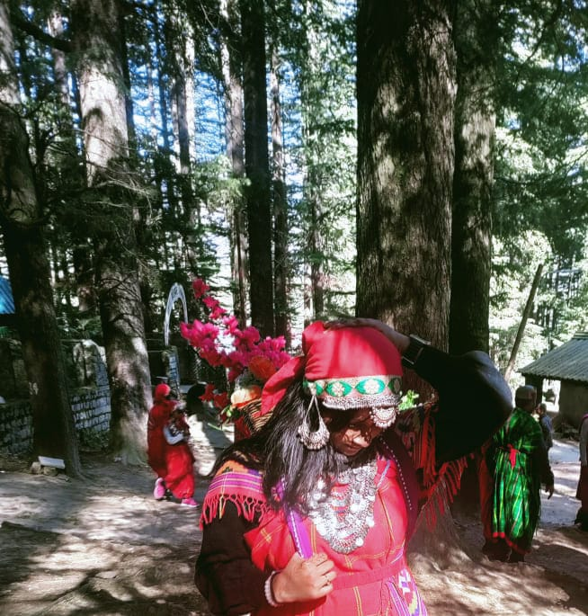

IMFROMATION
Shimla also known as Simla
The official name until 1972)[10] is the capital and the largest city of the northern Indian state of Himachal Pradesh.
In 1864, Shimla was declared as the summer capital of British India.
After independence, the city became the capital of East Punjab and was later made the capital city of Himachal Pradesh. It is the principal commercial, cultural and educational centre of the state. Small hamlets were recorded before 1815 when British forces took control of the area. The climatic conditions attracted the British to establish the city in the dense forests of the Himalayas. As the summer capital, Shimla hosted many important political meetings including the Simla Deputation of 1906, the Simla Accord of 1914 and the Simla Conference of 1945. After independence, the state of Himachal Pradesh came into being in 1948 as a result of the integration of 28 princely states. Even after independence, the city remained an important political centre, hosting the Simla Agreement of 1972. After the reorganisation of the state of Himachal Pradesh, the existing Mahasu district was named Shimla. Shimla is home to several buildings that are styled in the Tudorbethan and neo-Gothic architectures dating from the colonial era, as well as multiple temples and churches. The colonial architecture and churches, the temples, and the natural environment of the city attract tourists. Major city centre's attractions include the Shri Hanuman Jakhu (Statue), Jakhu Temple, Viceregal Lodge, Christ Church, Mall Road, The Ridge and Annadale. The city centre's northernmost point is Jakhoo and the southernmost location is Annadale, the easternmost point is Sanjauli and the western point is Chotta Shimla. The Kalka–Shimla Railway line built by the British, a UNESCO World Heritage Site, is also a major tourist attraction. Owing to its steep terrain, Shimla hosts the mountain biking race MTB Himalaya, which started in 2005 and is regarded as the biggest event of its kind in South Asia. Shimla also has the largest natural ice skating rink in South Asia. Apart from being a tourism centre, the city is also an educational hub with several colleges and research institutions.SEVEN HIILS
Shimla was built on top of seven hills: Inverarm Hill, Observatory Hill, Prospect Hill, Summer Hill, Bantony Hill, Elysium Hill and Jakhu Hill. The highest point in Shimla is the Jakhu hill, which is at a height of 2,454 metres (8,051 ft).
In recent times the city has spread past the initial seven hills.
CULTURE
The people of Shimla are informally called Shimlaites. With largely cosmopolitan crowds, a variety of festivals are celebrated here. The Shimla Summer Festival, held every year during peak tourist season,[65] and lasting 3–4 days, is celebrated on the Ridge. The highlights of this event include performances by popular singers from all over the country. Since 2015, 95.0 BIG FM[66] and Himachal Tourism have been jointly organising a seven-day long winter carnival on the Ridge from Christmas to New Year's.[67][68][69] Shimla has several places to visit. Local hangouts like the Mall and the Ridge area in the heart of the city. Most of the heritage buildings in the city are preserved in their original 'Tudorbethan' architecture. The former Viceregal Lodge, which now houses the Indian Institute of Advanced Study, and Wildflower Hall, now a luxury hotel, are some of the famous ones. A collection of paintings, jewellery, and textiles of the region can be found at the State Museum (built-in 1974). Lakkar Bazaar, a market extending off the Ridge, sells souvenirs and crafts made of wood. Tatta Pani, 55 kilometres (34.2 mi) from the main city, is the name of hot sulphur springs that are believed to have medicinal value located on the banks of the River Satluj. Shimla is also home to South Asia's only natural ice skating rink.[70] State and national level competitions are often held at this venue. Shimla Ice Skating Club, which manages the rink, hosts a carnival every year in January, which includes a fancy dress competition and figures skating events. Due to the effects of global warming and increasing urban development in and around Shimla, the number of sessions on the ice every winter has been decreasing in the past few years.